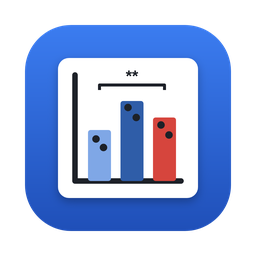
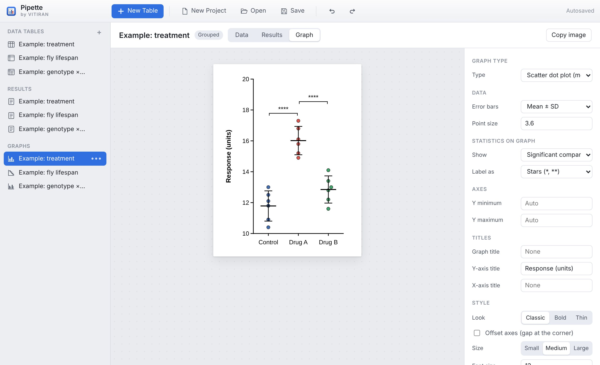
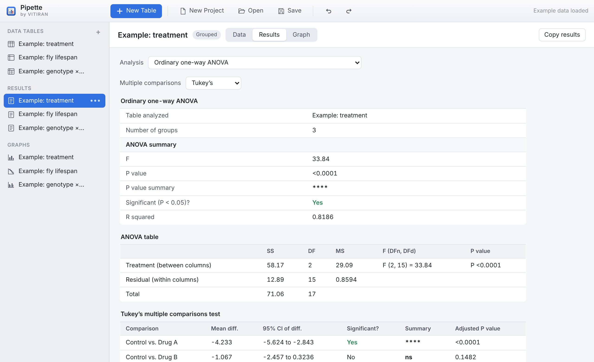
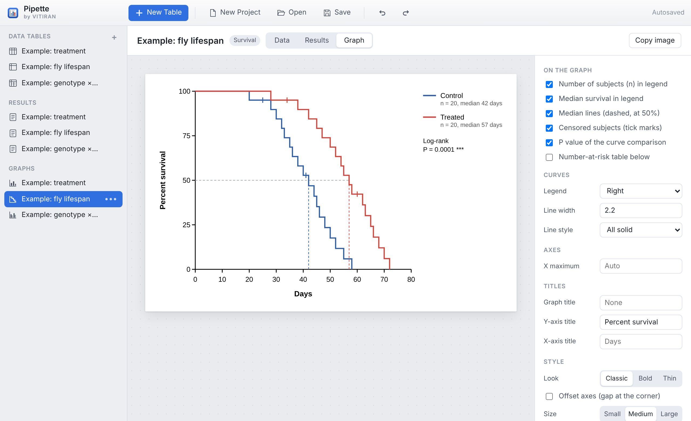
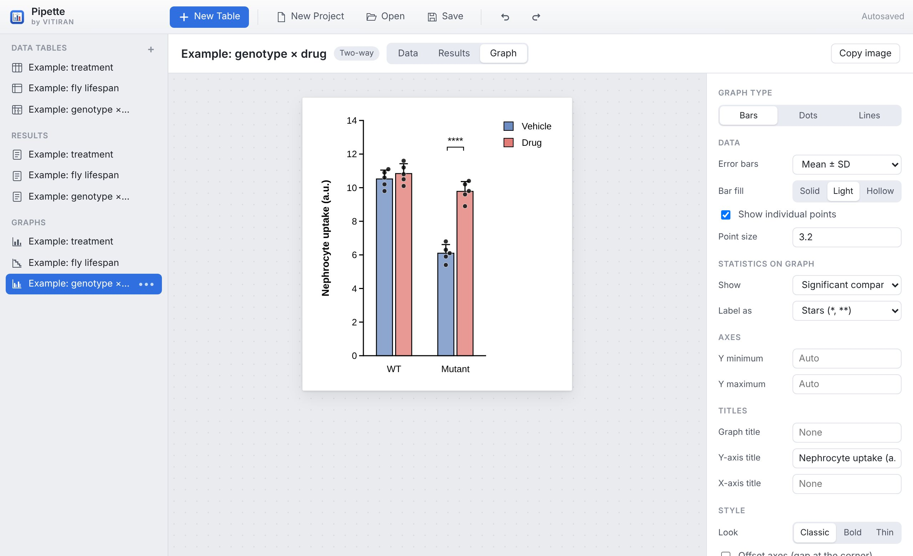
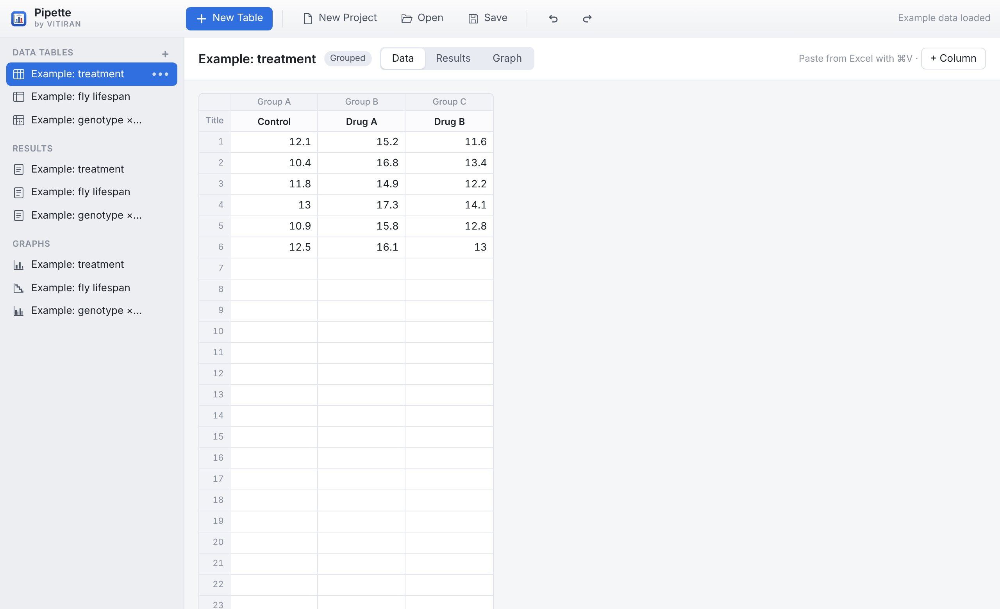

Free · Mac · Windows · Browser
A lightweight statistics and graphing app for everyday lab data. Paste your numbers, get the right test, and export a publication-ready graph in a few clicks.

Features
I built Pipette for my own fly-lab data: a familiar spreadsheet-and-graph workflow, the statistical tests biologists actually use, and graphs that go straight into a figure or a slide.
Screenshots




Install
Pipette is free and not sold through the App Store or Microsoft Store, so the first launch needs one extra click to confirm you trust it.
A real Mac app: its own window, menus and Save/Open dialogs — no browser needed. Works fully offline, macOS 11 or newer.
A real Windows app — no browser needed. No installer, no admin rights, works offline. Windows 10 or 11 (it uses the Microsoft Edge web engine that comes with Windows). Keep Pipette.exe anywhere, e.g. your Desktop or Documents.
Good to know
Everything runs on your own computer. Nothing is uploaded. Save projects as .pipette files and reopen them on Mac or Windows.
Every test was checked against established statistics packages (scipy, statsmodels, pingouin) on many random datasets, matching to many decimal places.
Pipette is free for everyone and released under the MIT licence. Feedback and suggestions are welcome by email.
Pipette’s full source code is public, so you don’t have to take the statistics on trust. The whole app is one readable file: the statistical tests, the graphs and the export are all in plain JavaScript. The Mac and Windows downloads run this same code inside a small native window (Mac source, Windows source).
Spotted something that looks wrong, or a result that differs from your usual software? Please tell me and I’ll check it.
Citing Pipette
Pipette is free, and it always will be. If it helped with something you publish, a citation is a lovely way to say thanks — never required.
Used Pipette in a paper, thesis or poster? I’d genuinely love to hear about it — send me a quick note. 🙂
Start with the built-in examples — a treatment experiment, a fly lifespan assay and a genotype × drug study.